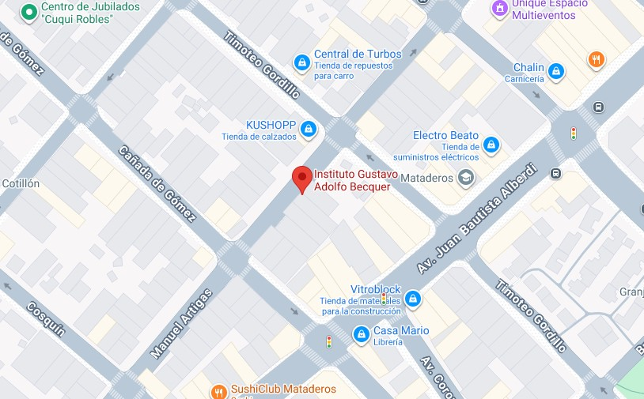

Descripcion:
- La empresa se dedica a educación de los niños, promoviendo valores como la verdad, justicia y solidaridad, y desarrollando capacidades cognitivas, psicomotoras, de lenguaje y socioafectivas a través de actividades como estimulación temprana, robótica y clases abiertas a las familias
Tareas:
- Tramites bancarios en organismos públicos y privados
- Pago a proveedores
- Atención al público en general
- Colaboración en tareas operativas y de archivo.
Fecha de ingreso:
- 2016
Fecha de finalización:
- 2017
Ubicación:
- Manuel Artigas 6828, Mataderos
